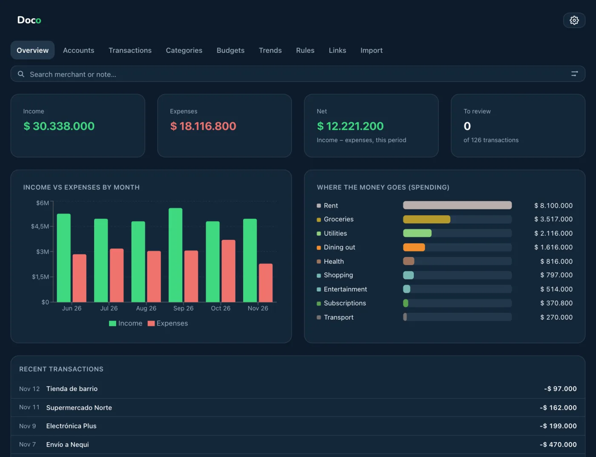
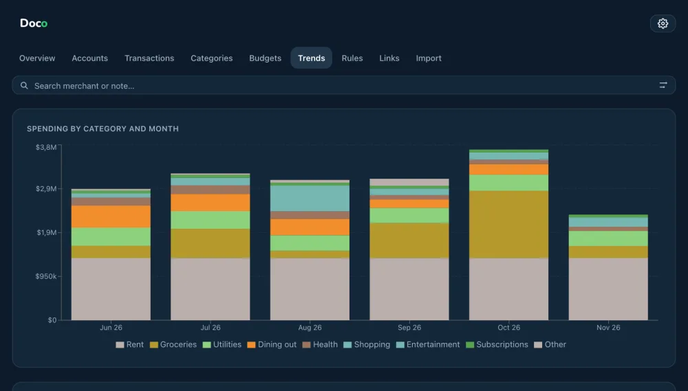
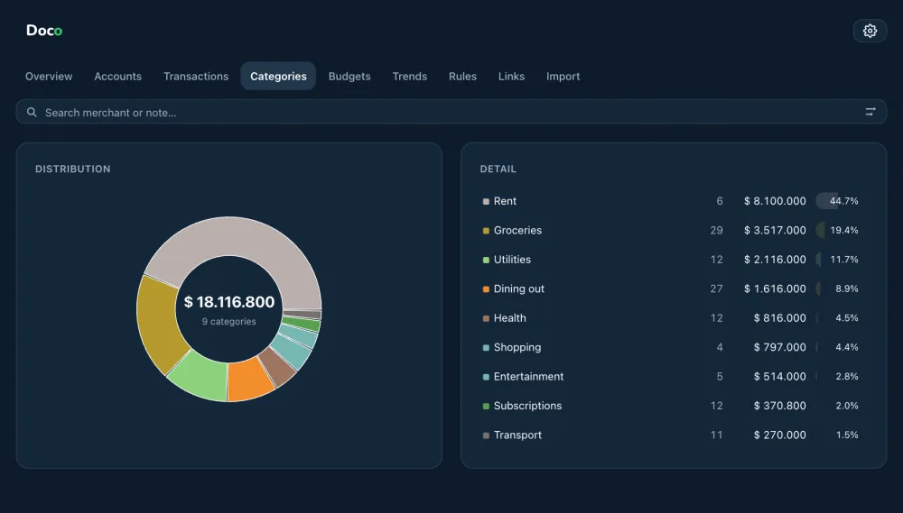
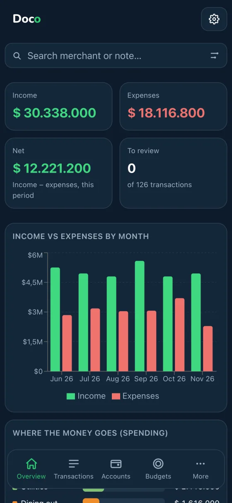
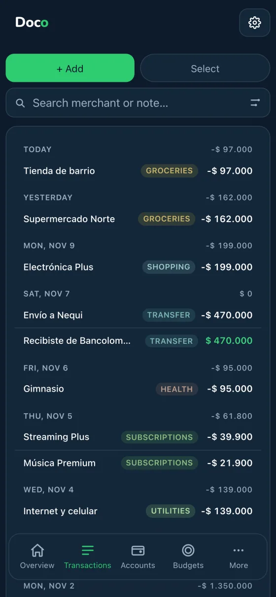

Web app · React · Neon
AI-built, human-directedDoco
A personal finance app: import your Bancolombia, Nequi and Nu statements, categorize the transactions and see where the money goes.





Screenshots use made-up demo data.
01 What it does
- ImportUpload PDF or Excel statements; the app reads the transactions and reconciles them with the ones you already have.
- CategorizeAutomatic rules, your own categories, splitting one transaction, and linking transfers between accounts so they don't count as spending.
- AnalyzeAn overview with income, spending and net; a breakdown by category; monthly trends; and a filterable transaction table.
Anyone can create an account and use it with their own statements.
02 How it is built
It started as a local app with a Python (FastAPI) backend and a SQLite database. I then moved the whole engine to JavaScript that runs in the browser: the statement parsers, the rules and the queries. I checked the new engine against the Python backend on real statements and the results matched. Today it is a static site on Vercel with login (Neon Auth) and the data stored in a Neon database.
03 How AI was used
AI-built, human-directed. Claude Code wrote most of the code. I decide what the app should do, use it with my own statements, check the results and decide what comes next.